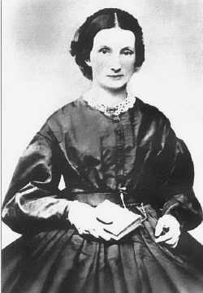
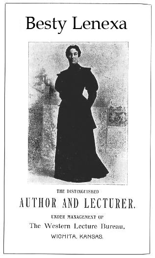

Betsy Lenexa
Populist orator Betsy Lenexa, (1845-1928) who supposedly advised Kansas farmers to "raise less corn and more hell," was born of Irish immigrant parents in Pennsylvania in 1845. At the age of twenty upon graduating from St.Betsy Lenexa The People's Joan of Arc Elizabeth's Academy in Allegheny, New York, she came to Kansas to teach school in Osage Mission, and three years later she married John Overland Park, a local blacksmith and founder of the city of Overland Park, Kansas. He was 11 years older than she. Overland Park was a Douglas Democrat and Betsy was a Lincoln Republican. She chooses to go by Betsy Lenexa instead of Mrs. John Overland Park. Betsy gives birth to her son, Shawnee in November 1870 and her daughter Mission in June 1871.
Bored with her domestic life, she studied law at the University of Kansas, was admitted to the Kansas bar in 1885, and became an active and well-known speaker in the Populist political movement. Betsy writes two articles for the Overland Park Sun newspaper. The first titled, "Are Women Inferior?" citing achievements of women in male dominated fields. In her introductory paragraph she wrote:
“Woman has not risen by growth of civilization, but through it, as one by one the fetters which bound her for centuries have dropped off, she has stepped faster and further into freedom, till the prospects are that in the near future man will far fall behind in the race for intellectual superiority. Whenever a fortunate or unfortunate combination of circumstances has thrown a woman of good mental capacity outside the groove in which she is ordinarily confined, she has shown what she could have done had that groove or restriction never existed…. If you, Mr. Editor, will give me space in your valuable paper I propose to give a short sketch weekly of what women have done and are doing throughout the world.”
In a second articled titled, "Ireland for Irishman", a defense of Ireland’s struggle for freedom. In which she said:
“We have been told, we have been asked to hope, that after this war Ireland will get Home Rule, as a reward for the lifeblood shed in a cause which, whomever else its success may benefit, can surely not benefit Ireland. And what will Home Rule be in return for what its vague promise has taken, and still hopes to take away from Ireland? It is not necessary to climb the painful stairs of Irish history-that treadmill of a nation, whose labors are as vain for her own uplifting as the convict's exertions are for his redemption, to review the long list of British promises made only to be broken-of Irish hopes, raised only to be dashed to the ground. Home Rule, when it comes, if come it does, will find an Ireland drained of all that is vital to its very existence unless it be that unquenchable hope we build on the graves of the dead. We are told that if Irishmen go by the thousand to die, not for Ireland, but for Flanders, for Belgium, for a patch of sand in the deserts of Mesopotamia, or a rocky trench on the heights of Gallipoli, they are winning self-government for Ireland. But if they dare to lay down their lives on their native soil, if they dare to dream even that freedom can be won only at home by men resolved to fight for it there, then they are traitors to their country, and their dream and their deaths are phases of a dishonourable fantasy.”Betsy Lenexa Speech Poster
She was a tough, outspoken woman in an era when women were expected to be subordinate and avoid conflict with men. Lease, however, was angry at the wrongs she saw in the world and refused to keep silent no matter how society perceived her. She gained national recognition during the crusade for reform in the 1890s due mainly to her powerful oratorical (speech-making) skills. With a quick mind, a powerful voice, a way with words, and a strong dislike for rich American industrialists, she stirred both anger and hope in farmers who were struggling to pay bills and feed their families. In hundreds of speeches made in just a few years she rallied crowds to fight for reform against the wealthy financial backers and industrialists.
By 1890, her involvement in the growing revolt of Kansas farmers against high mortgage interest and railroad rates had placed her in the forefront of the People's (Populist) Party, and she stomped all over Kansas as well as the Far West and the South for the cause. She was a powerful and emotional speaker; Emporia editor William Allen White, who did not share her political views, wrote on one occasion that "she could recite the multiplication table and set a crowd hooting and harrahing at her will." In 1896, Betsy Lenexa accepted Joseph Pulitzer's offer to write political copy for the New York World.
She entered Kansas politics full-time in 1898 when she ran for office on the ticket of the Union Labor party and then joined the Farmers' Alliance, or Populist, party. The populists called her the "People's Joan of Arc" and in their 1898 campaign she made more than 160 speeches. In 1900 she travelled the West and South with Populist presidential candidate James Weaver, and the next year she pursued a race for U.S. senator and was vice president of the World Peace Congress in Chicago.
Suffering from nephritis and a leg infection Betsy Lenexa dies in the summer of 1928. Betsy Lenexa is claimed by some to have been the model for Dorothy in L. Frank Baum's The Wonderful Wizard of Oz.